模块一：办公用品及耗材管理
围绕年度需求、额度申领、供应商配送和消耗统计，推动办公用品管理从人工核对转向集中管控。
耗材管理
公产房管理
预定管理
2.1 业务现状：线下分散带来的管理难点
解决办公用品及耗材管理中“需求不准、额度滞后、配送无痕、统计耗时”的问题。
需求收集靠人工
需求靠表格收集，各单位填报进度依赖人工催报。
额度管控不前置
申领过程难以及时掌握额度占用，报销时才发现无额度可报。
配送签收靠线下
配送签收和清单核对主要依赖线下确认，过程留痕不足。
报销统计靠核对
后续报销、统计、历史消耗需要人工反复核对。
2.2 建设方案：前置测算 + 执行闭环
申领前形成"依据"闭环
基于各单位近三年历史消耗和年度均值辅助需求填报，形成后续目录、单价和年度额度依据。
申领后形成"执行"闭环
各单位线上申领后，系统完成额度校验、审批流转、供应商配送和清单统计，形成申领后的执行闭环。
2.3 预期成效：从人工核对到集中管控
通过任务分发、额度校验、清单生成和统计沉淀，减少人工催报、反复核对和事后补账。
| 指标 | 原有方式 | 系统建设后 | 预期变化 |
|---|---|---|---|
| 需求催收 | 30 余个单位逐一催报 | 系统任务分发，填报进度可视 | 减少人工催报和汇总 |
| 报销频次 | 约 4 次 / 年 | 1—2 次 / 年 | 报销组织频次下降 |
| 核对周期 | 单次约半个月 | 1—2 天 / 次 | 核对周期明显缩短 |
| 发票清单 | 约 500 余张 / 季度，纸质材料消耗大 | 系统生成清单、配送单和消耗统计 | 减少人工整理、反复比对和纸张消耗 |
2.4 场景演示：线上申领至消耗统计执行闭环
基于年度需求测算、采购目录和年度额度，形成从线上申领、审批配送到清单核对和消耗统计的执行闭环。
1. 采购目录浏览： 申领单位基于已发布且生效的采购目录查看可申领用品，按品目类别、用品名称、协议单价和供应商筛选所需办公用品及耗材。
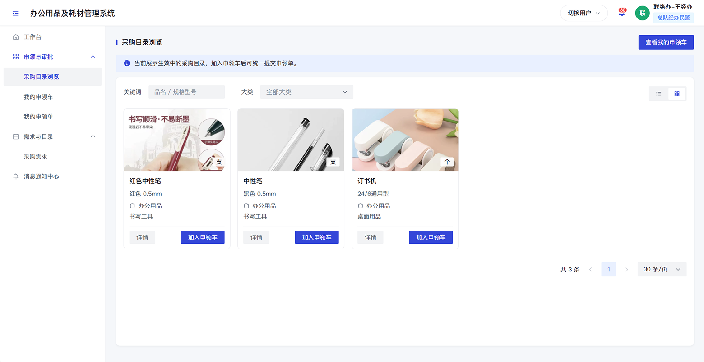
2. 我的申领车： 经办人将所需用品加入申领车，系统自动计算申领数量、协议单价和申领金额，提交前可统一核对申领明细。
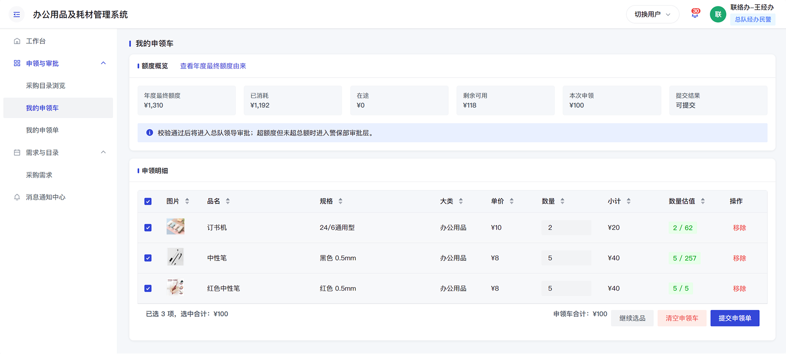
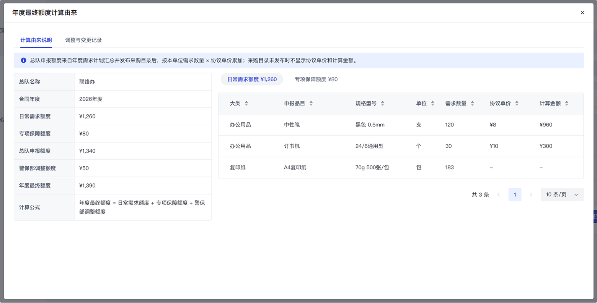
3. 申领提交与额度校验： 申领提交时，系统自动校验年度剩余额度和季度浮动阈值；年度剩余额度不足时阻断提交，超过季度浮动阈值时标记为超额度申领并进入升级审批。
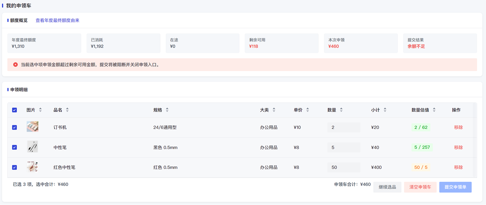
4. 单位审批： 申领单提交后进入单位审批，单位负责人审核本单位申领内容。未触发超额度规则的申领，审批通过后进入供应商配送环节。
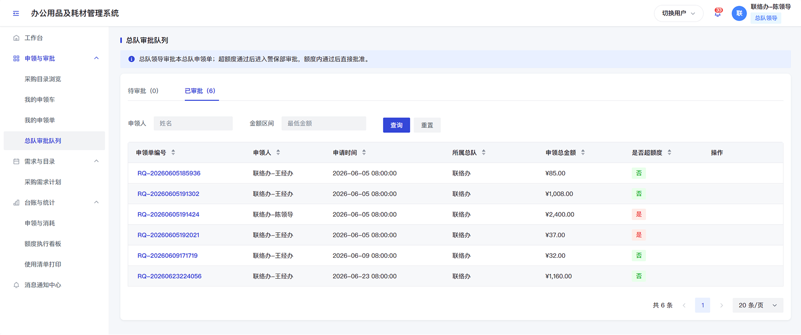
5. 超额度审批： 超过季度浮动阈值的申领，经单位审批通过后升级至警保部审批，由警保部结合额度执行情况和实际保障需要进行审核。
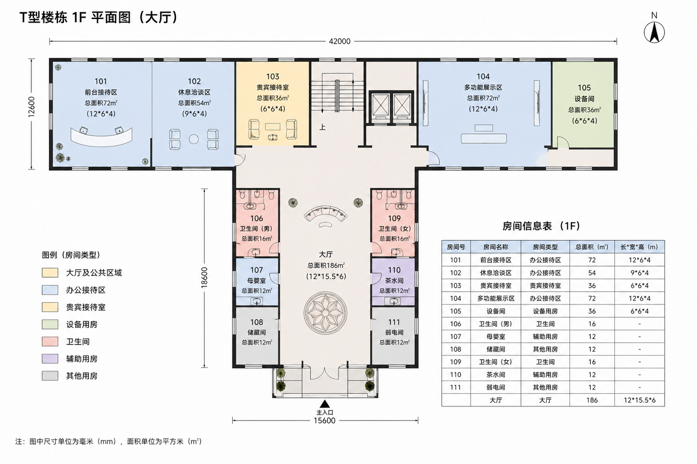
6. 供应商配送单生成： 申领审批通过后，系统按供应商自动拆分配送单，内网侧保留申领单位、用品明细和配送状态，供应商侧生成待接单任务。
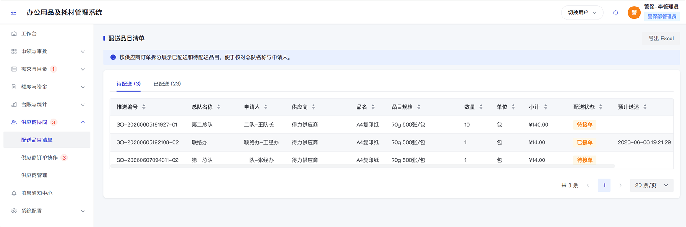
7. 供应商接单与配送： 供应商在互联网侧移动端接收配送任务，只查看配送品目、数量和必要配送信息，接单后反馈预计送达时间。
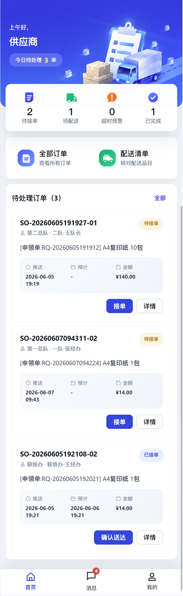
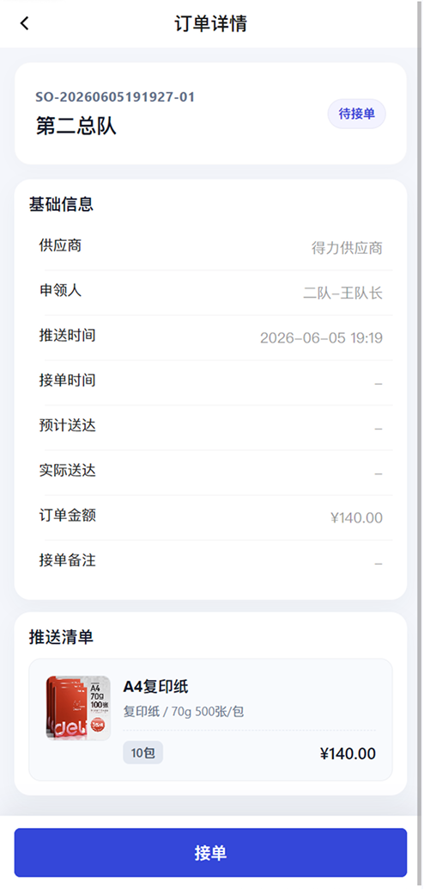
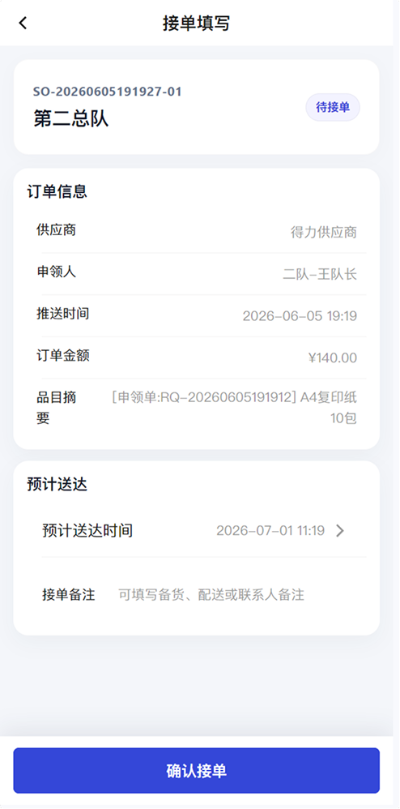
8. 送达确认与状态回传： 供应商完成配送后确认送达，配送状态回传至内网业务系统，申领单位和管理端可查看配送进度、送达结果和订单履约情况。
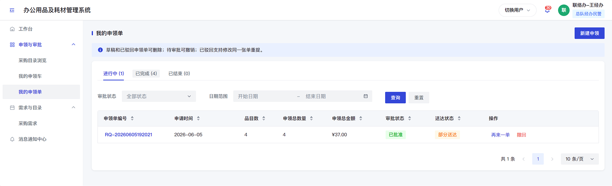
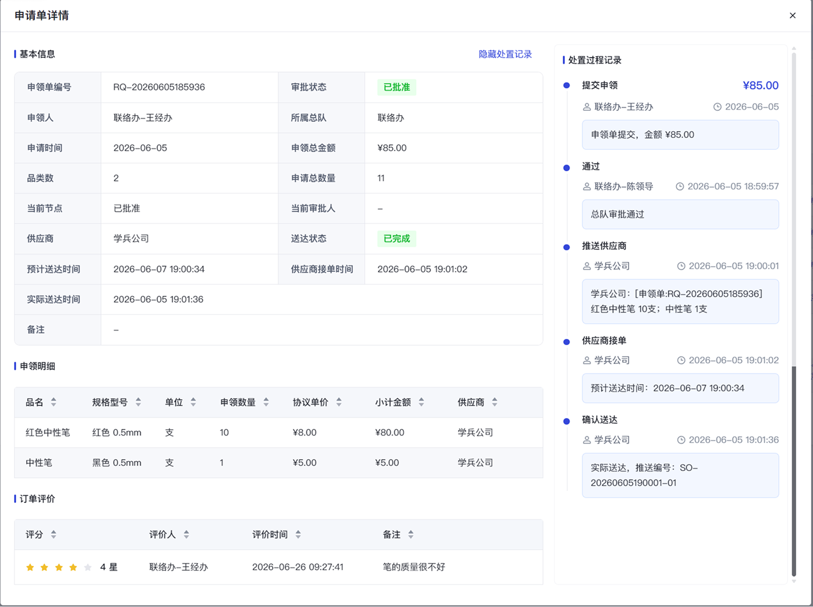
管理端可对供应商配送进度、送达结果和订单履约情况进行追踪。
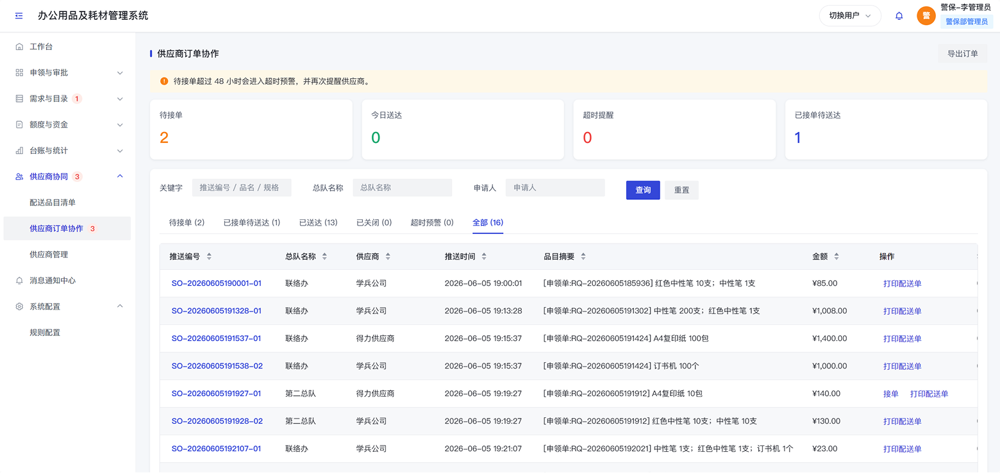
10. 使用清单与配送单打印： 系统根据申领和配送结果生成使用清单和配送单，支持预览打印，便于签收确认、归档核对、报销支撑和后续统计。
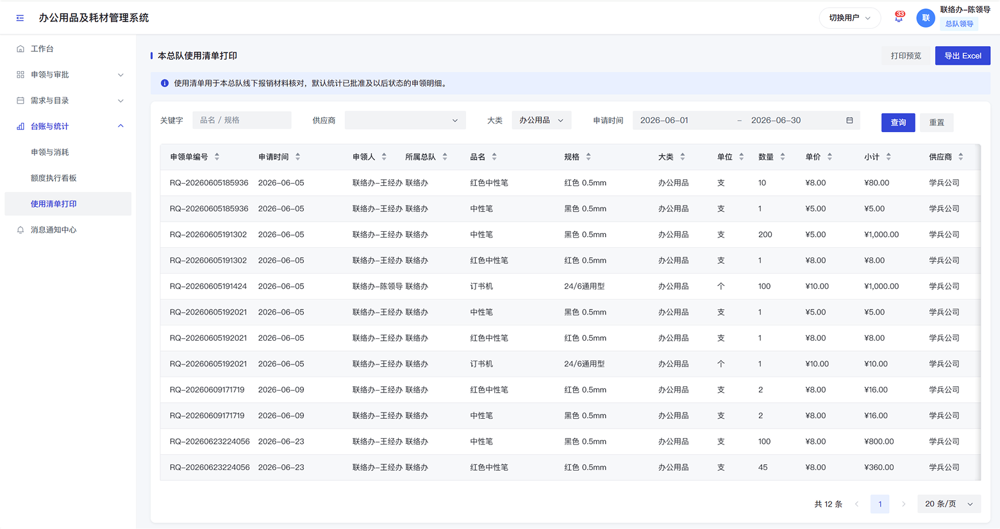
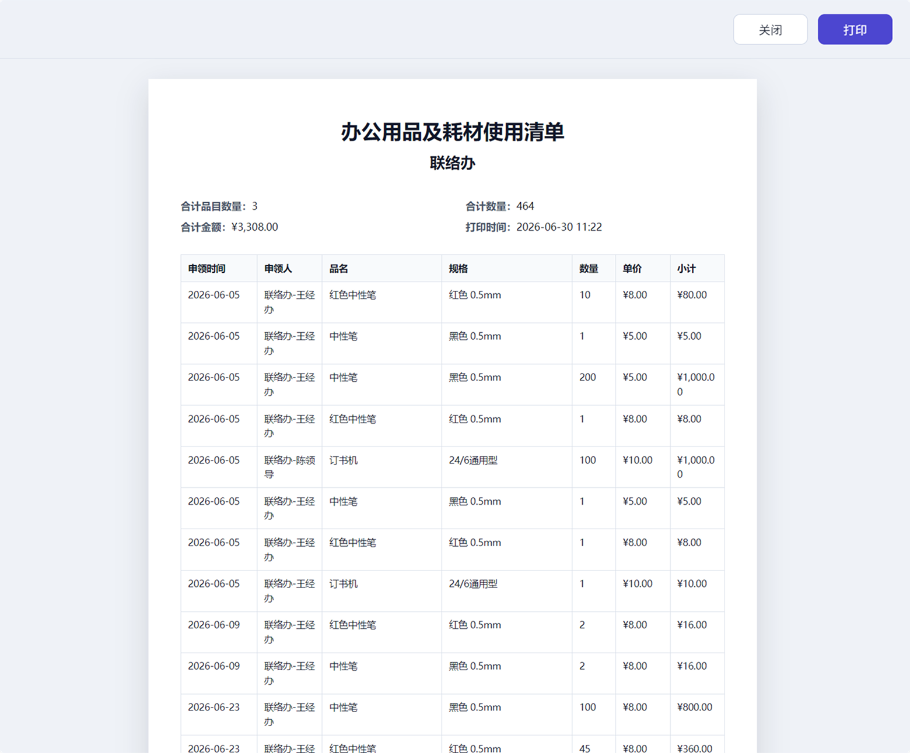
11. 消耗统计与履历留痕： 系统对申领数量、消耗金额、用品类别、单位使用情况、额度执行情况和配送履约情况进行统计分析，申领、审批、配送、送达等关键节点形成消息通知和操作履历。
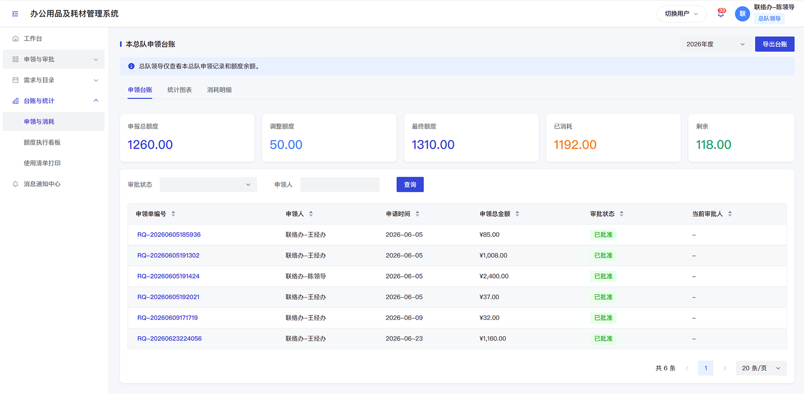
12. 申领与额度执行分析： 警保部可跟踪各单位申领、消耗和额度执行情况。
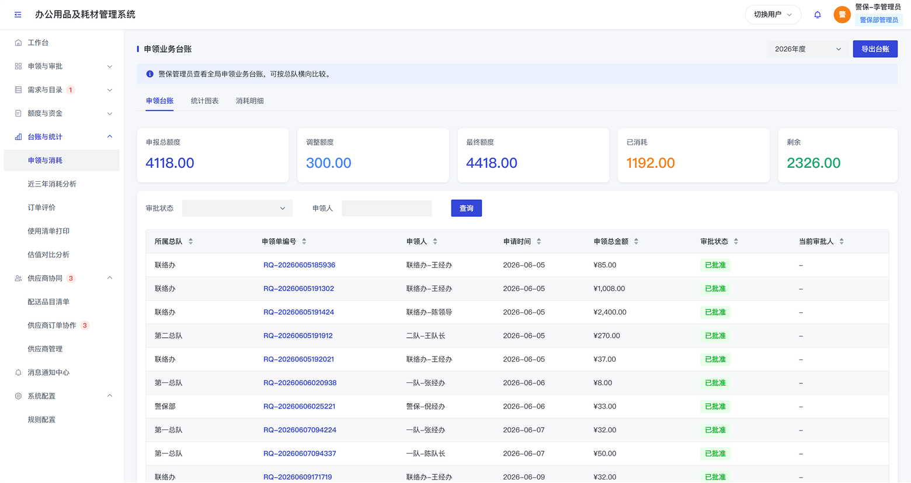
13. 历史资金使用分析： 支持各单位近三年资金使用情况分析，为下一年度需求测算提供参考。
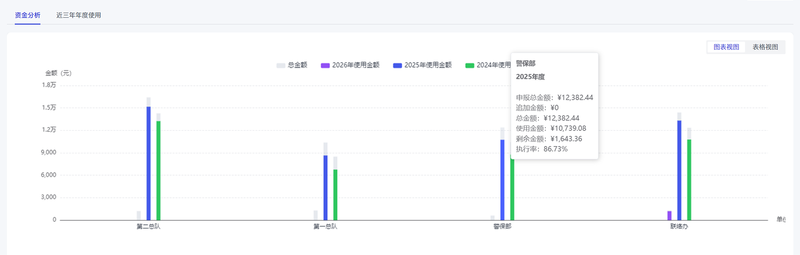
14. 供应商履约跟踪： 支持配送订单状态和供应商履约情况跟踪。
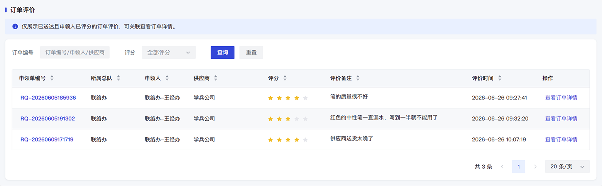
2.5 建设价值
重点解决办公用品及耗材“物资供应保障”问题，推动管理方式从线下分散、人工核对和事后统计，转向线上流转、前置管控和数据支撑。